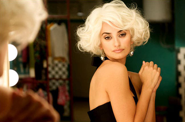
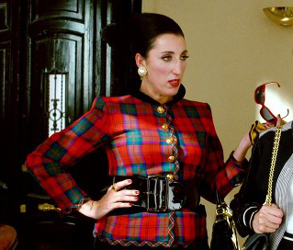
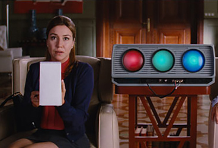
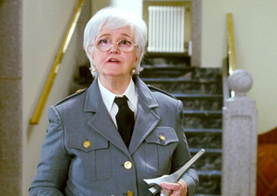
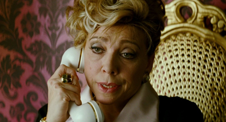
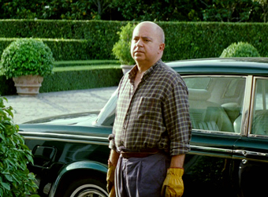
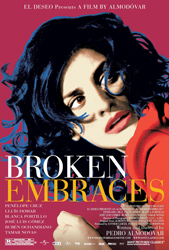
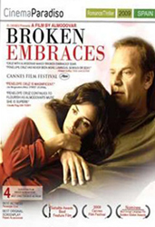
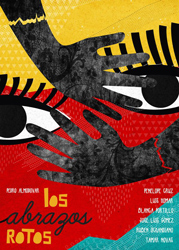
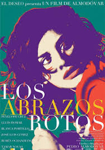

Penélope Cruz - Magdalena "Lena" Rivas
Rossy de Palma - Julieta José


Lola Dueñas - Lectora de labios
Chus Lampreave - Portera


Kiti Mánver - Madame Mylene
Edurne
Chon
Modelo
Agustin Almodóvar - Gardener

"Harry Caine" is a blind writer who shares his life with his agent Judit and her adult son, Diego. Slowly, events in the present begin to bring back memories of the past. Harry hears that millionaire Ernesto Martel has died; a young filmmaker, Ray X, appears and turns out to be Martel's son, Ernesto Jr. After Diego is hospitalized for an accidental drug overdose in a Madrid nightclub, Harry collects Diego from the hospital and looks after him to avoid worrying his traveling mother. The main storyline is told in flashback as Harry reluctantly tells Diego a tragic tale of fate, jealousy, abuse of power, betrayal and guilt.
The first flashback is to 1992, which introduces Magdalena "Lena" Rivero, Martel's beautiful young secretary, an aspiring actress. She becomes close to Martel, a millionaire financier, in order to find the money to help meet her dying father's medical bills. By 1994, she has become Martel's mistress. At this time, Harry is still living under his real name, Mateo Blanco, a well-respected film director. Martel is excessively possessive of Lena, but she is determined to become an actress and manages to win the main role in Blanco's film Chicas y maletas (Girls and Suitcases) by bringing Martel in as financier/producer. (The fictional film is similar to Almodóvar's 1988 release, Women on the Verge of a Nervous Breakdown, except that the Shiite terrorists have been replaced by a cocaine dealer; several of the cast of the previous film appear in the fictional one.) Martel spies on Lena and Mateo by sending his inhibited gay son, Ernesto Jr., to videotape the production of the film, ostensibly for a "making of" feature, then hiring a lip-reader to interpret the conversations. Martel, seething with jealousy, screens the videos as the lip-reader narrates the furtive whispers of Lena and Mateo's passionate affair.
Furious, Martel confronts Lena, and when she threatens to leave him he pushes her down the stairs. But when she survives the fall, he relents and nurses her back to health. The filming completed, Lena and Blanco escape Martel's hold and go on holiday to Lanzarote. Lena takes a job as a hotel receptionist to pass the time. When she and Blanco read in El País that Chicas y maletas has received terrible reviews from critics, likely the end of Blanco's directing career, they decide to start over again together far from Madrid. Fate intervenes when Blanco is seriously injured and Lena is killed in a car accident, which is immortalized by Ernesto Jr., who has been trailing them with his camcorder. Mateo loses his sight permanently. Judit, his long-time production assistant, and an 8-year-old Diego arrive to help Blanco pick up the pieces and return to Madrid, where he eventually writes screenplays in braille under the pseudonym Harry Caine, represented by his agent, Judit.
The story picks up where it began in 2008: Harry shares his birthday in a bar with Judit and Diego. Judit becomes drunk on gin and, stricken with guilt, confesses to Harry that she sold out to Martel in 1994 because of her fury at Harry for abandoning the film to run away with Lena; she also tells him of her involvement in providing Martel the phone number of the hotel in Lanzarote where Lena and Mateo were hiding. She confirms that Martel sabotaged the release of Chicas y maletas by using the worst take from each scene in order to destroy Mateo's reputation. The next morning she reveals to Diego that Harry is actually his father, a fact both men were unaware of. Having exorcised some of his demons, Harry decides to return to his life as Mateo Blanco. Though believed lost, the original reels of Chicas y maletas and Ernesto Jr.'s camcorder footage are recovered: Judit had ignored Martel's order to destroy them and instead had hidden them away. Mateo and Diego re-edit the film for its long-delayed release as the director envisioned it.



